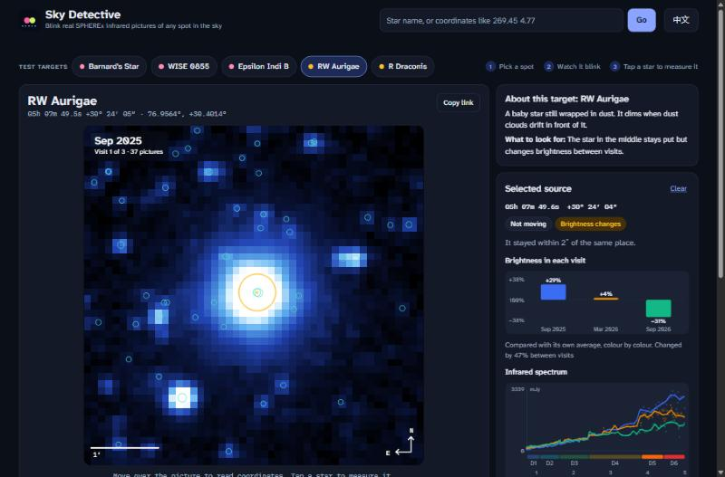

NASA Space Apps Challenge 2026 · Planet X and SPHEREx · Singapore
A blink comparator for NASA's SPHEREx infrared sky survey. Pick any spot in the sky, watch it blink, and see what moved or changed.
On the right: the real tool, running on real SPHEREx images of Barnard's Star.
LIVE
Why
A point of light that jumps between two pictures of the same sky is close to us: a comet, an asteroid, a nearby star, a brown dwarf, perhaps a new planet. A point that brightens or fades is a star doing something.
Volunteers have already found most known brown dwarfs this way. Sky Detective lets anyone do it with SPHEREx, even a 12-year-old.
How it works
Three views: Blink, Difference (only what changed) and Add (all visits together). Six detectors can be shown alone or added together. Field of view 3, 5 or 10 arcminutes.
LIVE · difference view
It measures, it does not only show
| Target | Measured from SPHEREx | Check |
|---|---|---|
| Barnard's Star | 10.3″ per year, north | known: 10.4″ |
| Epsilon Indi B | 4.5″ per year, south-east | Gaia DR3: 4.7″ |
| WISE 0855 | 9.6″ in 12 months, west | known: 8.1″ per year; blended with a star 3″ away |
| RW Aurigae | dims 47% at 3.8 to 5 µm | brightens at short wavelengths |
| R Draconis | brightness swings 74% | core saturated: no position given |
Each SPHEREx picture sees one wavelength, so every picture adds one point to a star's spectrum. The lines in the screenshot are RW Aurigae's spectrum in three visits.

All five, live
Barnard's Starsteps north
WISE 0855faint dot slides west (D5 + D6)
Epsilon Indi Bshifts one pixel south-east
RW Aurigaefades between visits
R Draconisits glow grows and shrinks
The yellow ring marks the star the tool measured. Each frame is a stack of real SPHEREx images from one sky visit.
Under the hood
Where it stands
Data: SPHEREx Level-2 spectral images (DR1 and QR3), a joint project of JPL and Caltech funded by NASA, served by NASA/IPAC IRSA. Star positions: Gaia DR3 (ESA). Built with an AI coding assistant (Claude Code, Anthropic). Every sky picture is real SPHEREx data; none is AI-generated.